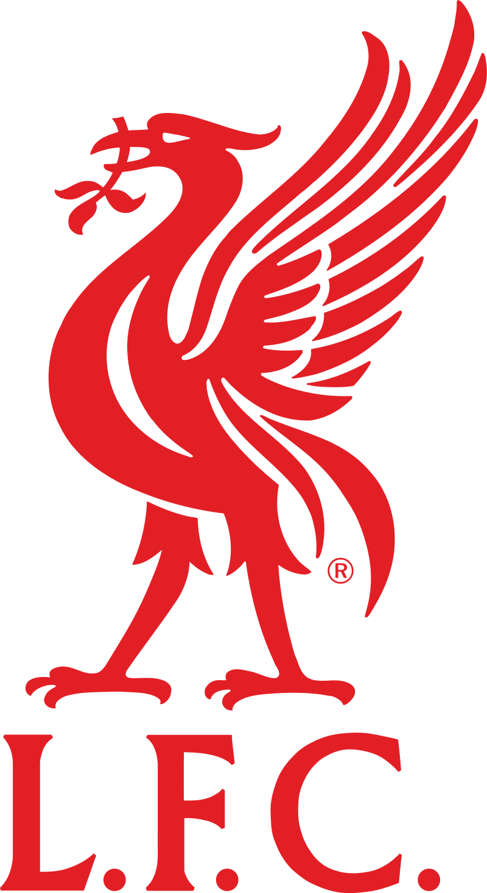

«Ліверпуль» (повна назва — Футбольний клуб «Ліверпуль » , англ. Liverpool Football Club , англійський професійний футбольний клуб з однойменного міста , розташованого в графстві Мерсасі . Заснований у 1892 році ; наступного року вступив до Футбольної ліги Англії . З моменту створення проводить домашні матчі на стадіоні « Енфілд ». Стадіон побудований в 1884 році, на ньому спочатку грав інший ліверпульський клуб, " Евертон ". «Енфілд» вміщує понад шістдесят одну тисячу вболівальників.
«Ліверпуль» є одним із найуспішніших англійських клубів за кількістю виграних титулів за всю історію . Клуб є 20-кратним чемпіоном Англії , 8-кратним володарем Кубка Англії , 10-кратним володарем Кубка ліги , 16-кратним володарем Суперкубку Англії , 3-кратним володарем Кубка УЄФА , 6-кратним переможцем Ліги чемпіонів чемпіоном світу 2019 року. Загалом «Ліверпуль» вигравав єврокубки тринадцять разів, що є четвертим результатом після мадридського « Реала », « Мілана » та « Баварії ». Найуспішніший період в історії клубу припав на 1970-і та 1980-і роки, коли командою керували Білл Шенклі та Боб Пейслі , які спільно на двох виграли 11 чемпіонських титулів та 7 європейських трофеїв.
Принциповими суперниками клубу з давніх-давен є англійські « Евертон » і « Манчестер Юнайтед » , з якими розігруються мерсісайдське і північно-західне дербі відповідно. Гімном клубу є пісня You'll Never Walk Alone , переспівана надалі ліверпульським гуртом Gerry & The Pacemakers.
